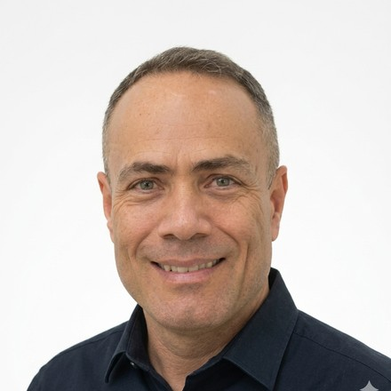

Diretor da HACON — Engenharia, Produto e Novos Negócios em Sistemas de Energia
Annibal é engenheiro eletrônico formado pelo Instituto Tecnológico de Aeronáutica (ITA), com mestrado em Sistemas de Controle pela UFSC e MBA em Negócios Internacionais pela University of Southern California (USC). Atua há mais de 30 anos na fronteira entre automação industrial, sistemas de energia e desenvolvimento de produto.
Como Diretor da HACON, lidera o desenvolvimento, a comercialização e a implantação do PPC-GD/SCRPI — o controlador de exportação zero multimarca da empresa para geração distribuída em baixa e média tensão. Antes disso, foi Head de Marketing, Produto e Novos Negócios na REIVAX, onde criou do zero uma nova linha de negócio em geração fotovoltaica de grande porte e liderou o desenvolvimento de controladores de usina e sistemas de automação para rastreadores solares.
Fundou e dirigiu a Hacon Tecnologia por 14 anos, período em que desenvolveu mais de 15 produtos eletrônicos do conceito ao lançamento e conduziu a empresa à certificação ISO 9000. Também atuou como diretor financeiro eleito da ACATE (Associação Catarinense de Empresas de Tecnologia).
É essa combinação — engenharia de automação aplicada a energia, gestão de produto e experiência regulatória de mercado — que sustenta o conteúdo técnico publicado neste site e no blog da HACON.
Desenvolvimento, comercialização e implantação de soluções de controle de energia para geração distribuída, incluindo o PPC-GD/SCRPI.
Criação de nova unidade de negócio em geração fotovoltaica de grande porte e desenvolvimento de controlador de usina e automação de rastreador solar.
Desenvolvimento de mais de 15 produtos eletrônicos, certificação ISO 9000 e gestão integral do negócio.
Gestão financeira da associação catarinense de empresas de tecnologia, com atuação em projetos junto a FINEP e CNPq.
Fale diretamente com o time responsável pelo desenvolvimento do PPC-GD/SCRPI.
Falar no WhatsApp